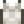

Sea Urchin
| Sea Urchin | ||||||||||||||||
| A slow-moving, spiny creature that some consider a delicacy. | ||||||||||||||||
| Information
| ||||||||||||||||
| Source | Foraging • Fish Pond • Turtle | |||||||||||||||
| Location | The Beach • Dangerous Mines | |||||||||||||||
| Season |
| |||||||||||||||
| Energy | Inedible | |||||||||||||||
| Sell Price |
| |||||||||||||||
| ||||||||||||||||
The Sea Urchin is a forageable item found year-round in the Tide Pool section of the Beach, i.e., to the east of the wooden footbridge.[1]
During Summer 12-14 extra Sea Urchins appear anywhere on the beach (including possibly the western section). It may also be found foraging on levels 1-29 of the Mines while the Shrine of Challenge is enabled, or the Danger in The Deep quest is active.
The average spawn rate for Sea Urchin in the tide pool section of the beach is 0.23/day. An additional 0.8 (on average) Sea Urchins per day will spawn during Summer 12-14. These spawn rates are not affected by the presence of other forageable items on the beach; in particular, Sea Urchins are not part of the standard six item per map limit on forageable items. 7 Foraging XP are granted for every Sea Urchin picked up, and all Foraging bonuses apply to Sea Urchins.
Emily may occasionally send you a Sea Urchin in the mail as a gift. She also sells five Sea Urchins at her shop at the Desert Festival for  5 Calico Eggs each. All saltwater Crab Pot fish may also produce a Sea Urchin in a Fish Pond, when the population of the pond reaches 5. It can also be gifted by a pet turtle with max friendship.
5 Calico Eggs each. All saltwater Crab Pot fish may also produce a Sea Urchin in a Fish Pond, when the population of the pond reaches 5. It can also be gifted by a pet turtle with max friendship.
Gifting
| Villager Reactions
| |
|---|---|
| Like | |
| Neutral | |
| Hate | |
Bundles
Sea Urchin is used in the  Dye Bundle on the Bulletin Board.
Dye Bundle on the Bulletin Board.
Crafting
| Image | Name | Description | Ingredients | Recipe Source |
|---|---|---|---|---|
| Bait Maker | Place a fish inside to create targeted bait. |
Tailoring
Sea Urchin can be used in the spool of the Sewing Machine to create the dyeable 
Fish Pond
Although Sea Urchins are not otherwise considered to be fish, they can be placed in a Fish Pond, where they will reproduce every 4 days. The initial pond capacity is 10 Sea Urchins; no quests are necessary to increase the pond capacity. The only possible output is purple Sea Urchin Roe.
| Item(s) Produced | Fishing XP Granted | Population | % of Items | Overall Daily Chance |
|---|---|---|---|---|
| 14 | 1-4 | 10% | 2.3-5% | |
| 5-8 | 28% | 15-22% | ||
| 9-10 | 51% | 44-48% | ||
| 14 | 9-10 | 2% | 1.7-1.9% | |
| Nothing | 1-4 | 90% | 98-95% | |
| 5-8 | 72% | 85-78% | ||
| 9-10 | 47% | 54-50% |
Quests
- One or two Sea Urchins may be requested by various saltwater fish in Fish Pond quests.
- Two Sea Urchins may be requested by the Raccoon at the Giant Stump as part of his fifth request, or as part of any request starting with the sixth.
Secrets
References
- ↑ See Beach::DayUpdate in the game code. The spawn position starts at point (65,11) on the beach map.
History
- 1.4: Can now be used in Tailoring. Can be requested in Fish Pond quests. Can be produced by Fish Ponds. Can be added to Fish Ponds.
- 1.5: Can now be added to Fish Tanks.
- 1.6: Now used to craft Bait Maker. Elliott is now neutral towards Sea Urchin. Can now be gifted by a pet turtle with max friendship. Can now be purchased from Emily at the Desert Festival. Now liked by Evelyn. May now be requested by the Raccoon.
| Foraging | |
|---|---|
| Basic | Sap |
| Spring | Common Mushroom • Daffodil • Dandelion • Leek • Morel • Salmonberry • Spring Onion • Wild Horseradish |
| Summer | Fiddlehead Fern • Grape • Red Mushroom • Spice Berry • Sweet Pea |
| Fall | Blackberry • Chanterelle • Common Mushroom • Hazelnut • Wild Plum |
| Winter | Crocus • Crystal Fruit • Holly • Snow Yam • Winter Root |
| The Beach | Clam • Cockle • Coral • Mussel • Nautilus Shell • Oyster • Rainbow Shell • Sea Urchin • Seaweed |
| The Mines | Cave Carrot • Purple Mushroom • Red Mushroom |
| The Desert | Cactus Fruit • Coconut |
| Skull Cavern | Dinosaur Egg • Fiddlehead Fern |
| Ginger Island | Ginger • Magma Cap |